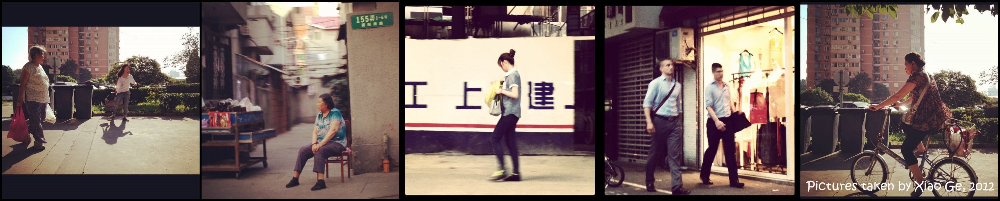

Xiao Ge's CV.
About
 That’s me and my family. In my other full-time "job" as a parent, I spend time playing with my kids (4 and 6 years old). I enjoy reading storybooks with them. Other hobbies: Playing tennis with my husband; Running; Reading.
That’s me and my family. In my other full-time "job" as a parent, I spend time playing with my kids (4 and 6 years old). I enjoy reading storybooks with them. Other hobbies: Playing tennis with my husband; Running; Reading.
Feel free to reach me via xiaog@stanford.edu HERE.
Below are some other random stuff I wanted to share! =]
To see with Empathy
- Capturing nuances in life moments with keen eyes - 
- The magic table soccer - in Beijing Design Week 2012, Xiao as a volunteer -
 - 24 hours at Lisbon Airport - Xiao as an observer -
- 24 hours at Lisbon Airport - Xiao as an observer -

In early 2012, I learnt a course - DESIGN WHAT? by Michael Barry, in which a story about two fishes and water was told. A simple but reverberant revealation: The most obvious, important realities are often the ones that are hardest to see and talk about. This is the most fundamental asset of human-centered design that I have carried along.
"Human-centered" doesn't necessarily limit the scope of focus on "user". It asks a designer to build empathy with users, sponsors, teammates, outsiders, non-experts,etc. It also doesn't limit the scope to "people", it asks a designer to be bio-inspired and cross-disciplinarily triggered. To build up empathy is to build up the critical AND open mindset.
To see the water is non-intuitive, habit-reversive, and simply difficult. It doesn't require a PhD degree or a special title to practice empathy, but it's worth a life-long practice. I simply experiment it with fun and rewards everyday.
To learn more about my experience in a human-centered approach, take a look at my past projects.
To think with action
- Experiencing frustration in early prototyping -

Fail, fail early and often, so as to succeed sooner. It's easy to say but really hard to do.
I like being buried in my slow thoughts - wondering, reflecting and daydreaming. Fantacy. And the opposite me would get agitated seeing myself idle in long thoughts: Get up and get your hands dirty! You can't enjoy the trip only by reading The loney planet, you must experience it.
That's the eternal fight between the two little puppets inside me, but I enjoy being an action-driven slow thinker. Fast doing, that's the mechanical engineer side of me. Slow thinking, that's the artistic and research side of me. To learn more about the two sides of me, take a look here.
To learn with x-discipline
This is a visual presentation of my skills and interests in depth and in breath, as well as in terms of technology, business and human.
My vertical focuses are in Design Methodology, Innovation Training/coaching as well as Mechanical Engineering.
My horizontal interests range from planting, sewing, nature, mechatronics, programming, cooking, sketching, reading, sports(tennis and martial arts), cats and dogs, and volunteering.
To learn more about how I worke in multi-disciplinary teams and how I utilize my broad skills in my past projects, take a view here.